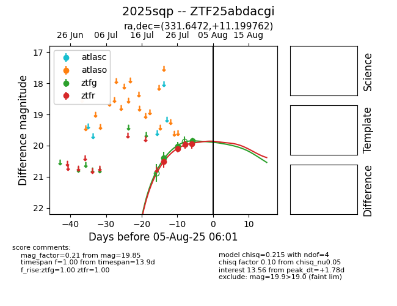

Target 2025sqp at 2025-08-05 06:01, see:
FINK: fink-portal.org/2025sqp
Lasair: lasair-ztf.lsst.ac.uk/objects/2025sqp
ALeRCE: alerce.online/object/2025sqp
TNS: wis-tns.org/object/2025sqp
YSE: ziggy.ucolick.org/yse/transient_detail/2025sqp
alt names
ZTF25abdacgi (ztf,fink)
2025sqp (tns,yse)
coordinates:
equatorial (ra, dec) = (331.6472,+11.19976)
galactic (l, b) = (71.1737,-34.62467)
photometry
last ztfg=19.85, ztfr=19.94
3 ztfg, 4 ztfr detections
